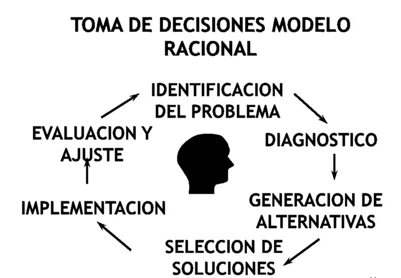

Proceso toma de decisiones
Pasos del Proceso Racional
- Determinar la necesidad de una decisión.
- Identificar los criterios de decisión.
- Asignar peso a los criterios.
- Desarrollar todas las alternativas.
- Evaluar las alternativas.
- Seleccionar la mejor alternativa.
Proceso Creativo en la Toma de Decisiones
- Exploración inconsciente: Ocurre fuera de los límites de la conciencia.
- Intuición: Sirve de enlace entre el inconsciente y la conciencia.
- Discernimiento: Resultado del trabajo intenso.
- Formulación lógica: Mediante reflexión persistente o críticas de los demás.
